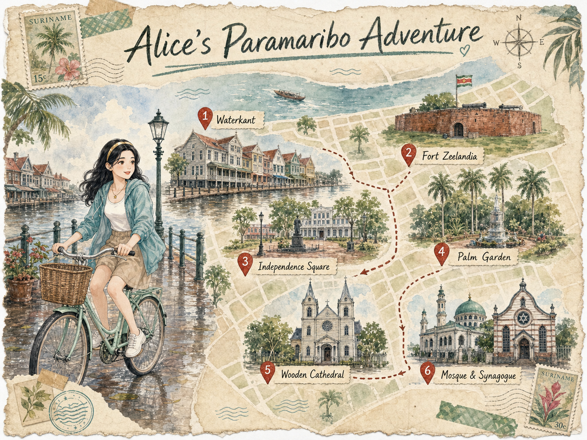
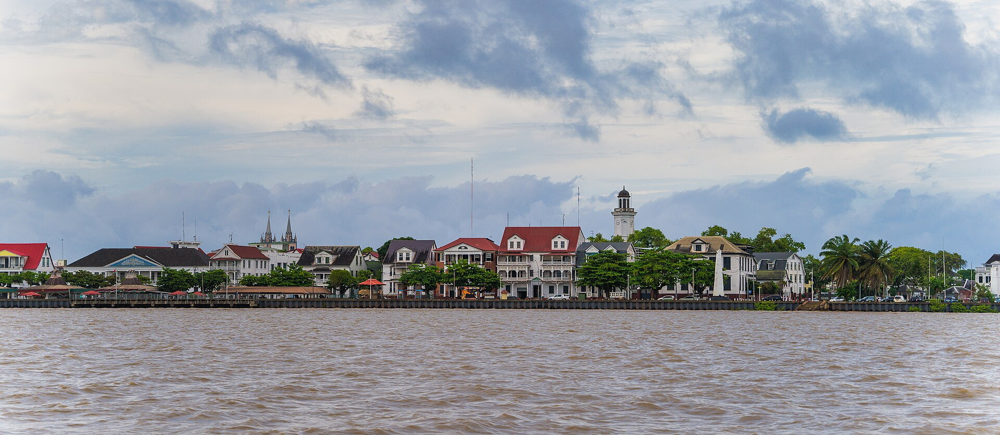
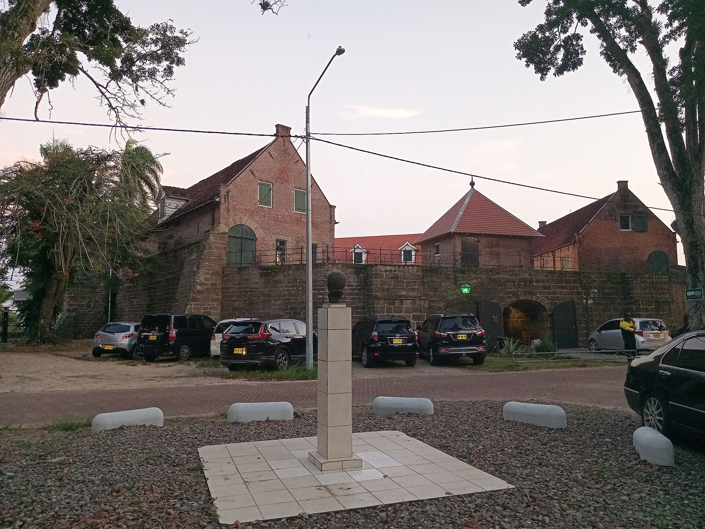
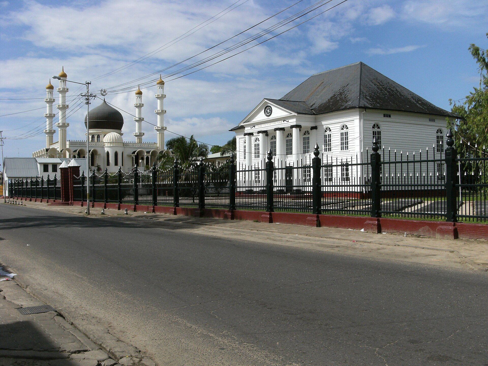

帕拉马里博Paramaribo
World-1000 · 苏里南河边的木城
World-1000 · 苏里南河边的木城

AI 插画导览图，仅作氛围展示；地标位置与路线请以官方地图为准。
苏里南河边，白色木屋、红砖堡垒与相邻的宗教建筑，把帕拉马里博几百年的城市层次排在一条步行线上。
帕拉马里博历史内城形成于十七、十八世纪的荷兰殖民时期。城市自 1683 年起沿热兰迪亚堡向西北铺开，街道借用贝壳沙脊形成的天然高地，随后又凭荷兰工程技术向北侧湿地扩展。
2002 年，联合国教科文组织以文化遗产标准（ii）和（iv）将历史内城列入《世界遗产名录》，强调这里把欧洲建筑与施工方法同南美本地材料、手艺和环境结合成独特的城市形态。
老城保留网格街道、宽阔林荫路与开放空间。许多建筑把荷兰式比例和立面，同热带地区常用的木材、通风方式与本地施工手艺放在一起。
Waterkant 的低层天际线、总统府的石木混合结构、木构主教座堂与热兰迪亚堡的砖墙，让城市的不同年代可以在步行范围内彼此对照。
当地旅游资料把帕拉马里博描述为由原住民、非洲、印度、爪哇、华人、黎巴嫩与荷兰影响共同塑造的城市；这种并置也出现在餐桌上，从苏里南本地菜到爪哇、印度与华人餐食都能在城里找到。
Keizerstraat 上，清真寺与 Neveh Shalom 犹太会堂相邻而立。它不是一段虚构的“偶遇”，而是可以由城市街景与图片文件页共同核验的真实空间关系。
AI 虚拟导游的想象旅行手记；人物互动与现场感受为基于公开资料的文学化想象，不作为事实依据。
我把自行车从 Waterkant 慢慢骑向老城。雨刚停，河面是带一点泥金的褐色，木屋檐下还在滴水。经过棕红色的热兰迪亚堡时，我放慢脚步，风里混着湿树叶和河水的气味。转进 Keizerstraat，我想象一位推着水果车的阿姨朝我笑，提醒我前面路口靠左走。清真寺的圆顶和白色犹太会堂同时落进视线，那一刻城市的多种语言像自行车铃一样轻轻碰在一起。傍晚我在 Waka Pasi 停车，手里是一杯凉饮，鞋边又落下几滴短雨。
从 Waterkant 出发，步行读完木屋、堡垒、广场与相邻的宗教建筑。


